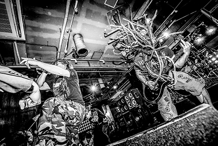

もしも、ワンピースの登場人物が
現代で高校生活を送っていたら――
手に負えないうねりとともに、
青くて、アツい、冒険の夜明けがやってくる。


CM一覧を見る

chaRaCTERS
キャラクター一覧を見る

gallaLy
ギャラリーを見る

カップヌードルリッチ
カップヌードルリッチ
参鶏湯味
商品詳細を見る
オンラインストアで購入
カップヌードル
カップヌードル
海老の濃厚トマトクリーム
商品詳細を見る
オンラインストアで購入


カップヌードル
カップヌードル
黄金鶏油 鶏塩
商品詳細を見る
オンラインストアで購入


カップヌードルBIG
カップヌードルビッグ
ジューシィな"謎肉"が増えて、食べ応えさらにアップ！
商品詳細を見る
オンラインストアで購入

商品一覧を見る

マキシマム ザ ホルモン
｢ ハングリー・プライド 」
作詞/作曲 マキシマムザ亮君
編曲 マキシマム ザ ホルモン
1998年八王子にて結成。日本語を独自の語感表現で操り、意味不明に見えて実は奥深いメッセージ性を持つ強烈な歌詞と、激し
いラウドロックにPOPなメロディを融合させたサウンドスタイルが特徴で、マキシマムザ亮君 (歌と6弦と弟)、ダイスケはん (キ
ャーキャーうるさい方)、上ちゃん (4弦)、ナヲ (ドラムと女声と姉)の4人からなるロックバンド。
オリコンアルバムチャートで3週連続1位を獲得したアルバム「予襲復讐」や、オリコン週間DVD総合ランキングで1位を獲得し
た映像作品「DeKa Vs DeKa ～デカ対デカ～」に続き、2018年11月に漫画+CDの“書籍”として発刊された新作「これからの麺
カタコッテリの話をしよう」が、漫画の内容や楽曲だけではなく特典等も話題を集め、ロックバンド史上初の快挙となるオリコ
ン週間BOOKランキングのコミック・エッセイジャンルで3週連続1位を獲得した。
2018年9月にダイスケはんの重度の頸椎椎間板ヘルニア治療のためライブ活動を一時休止したが、手術成功と術後の経過良好に
つき、2019年5月よりライブ活動を再開。
さらに、マキシマムザ亮君による「ロックバンドのフランチャイズ化 マキシマム ザ ホルモン2号店プロジェクト」が日本最大
の広告＆マーケティング賞“2019 59th ACC TOKYO CREATIVITY AWARDS”にてACCシルバーを受賞するなどバンドの枠
を超え、多岐にわたって活動中！
尾田栄一郎
1975年1月1日、熊本県熊本市に生まれる。高校在学中の1992年
に集英社週刊少年ジャンプ"第44回手塚賞"応募。
『WANTED！』で準入選を受賞。1993年には『一鬼夜行』
で"第104回ホップ☆ステップ賞"に入選。その後も数々の読み切
り漫画をジャンプ誌上で発表し、1997年『ONE PIECE』の連
載を開始、現在に至る。
窪之内英策
代表作「ツルモク独身寮」「ショコラ」は翻訳出版のみなら
ず、実写化やドラマ化され、国内外でも広く展開された。現在
はイラスト制作を中心に活動中。色鉛筆やマーカーを用いて描
き出す、美麗で生き生きとしたキャラクターたちは年齢問わず
多くのファンを魅了し、特に若い女性からの絶大な支持を得て
いる。
シャフト
1975年の創立から約40年にわたり作品制作とクリエイティブス
タッフの育成を主に活動しているアニメ制作会社。独特の色彩
感や演出方法で知られており、代表作に「化物語」や「魔法少
女まどか☆マギカ」「打ち上げ花火、下から見るか？横から見
るか？」など。テレビシリーズだけでなく劇場版なども手がけ
る。
原作：「ONE PIECE」尾田栄一郎（集英社 週刊「少年ジャンプ」連載）
キャラクターデザイン／窪之内英策
音楽／マキシマム ザ ホルモン「ハングリー・プライド」
作詞・作曲／マキシマムザ亮君 編曲／マキシマム ザ ホルモン
ECD／齋藤和典
クリエーティブディレクター・企画・コピー／佐藤雄介
企画・コピー／秋田勇人・武田裕輝
アートディレクター／前田彩
グラフィックデザイナー／小山雪
監督／高瀬裕介
アニメーション制作／シャフト
アニメーションキャラクター設計・レイアウト・作画監督／名倉靖博
CG制作／MORIE inc.・旭プロダクション・FLUX・StealthWorks
プロデューサー／早坂匡裕・長谷川武徳
プロダクションマネージャー／馬場玲瑠・工藤拓・大野瑞樹
VFX Artist／佐々木賢一 ミキサー／綾城重理人 音響効果／浅梨なおこ
仕上げ協力／JHOSON・久藤拓実・柴野剛宏・吉田一樹・JACKY
〈予告篇制作〉
クリエーティブディレクター・企画・コピー／佐藤雄介
企画・コピー／秋田勇人・武田裕輝
アートディレクター／前田彩
監督／平岡政展
イラストレーター／窪之内英策
プロデューサー／早坂匡裕・長谷川武徳
プロダクションマネージャー／馬場玲瑠・工藤拓・大野瑞樹
ミキサー／川村大介
〈グラフィック制作〉
クリエーティブディレクター・コピー／佐藤雄介
アートディレクター／前田彩
グラフィックデザイナー／石川真衣・小楠泰大・小山雪
コピー／秋田勇人・武田裕輝
イラストレーター／窪之内英策
背景着彩／山田だり
レタッチ／濱中英華
監修／集英社・東映アニメーション

© 尾田栄一郎／集英社・フジテレビ・東映アニメーション
© 2019 EISAKU KUBONOUCHI / METEOR STREAMS


カップヌードル

日清のどん兵衛

チキンラーメン

日清焼そばU.F.O.

日清ラ王

日清カレーメシ


商品に関するお問い合わせ |
プライバシーポリシー |
サイトのご利用について
このサイトに関するお問い合わせ先：日清食品グループウェブダイヤル／0120-208-802 (受付時間：9:00～17:00 土・日・祝日を除く)
Copyright ©2020 NISSIN FOODS HOLDINGS CO.,LTD. All Rights Reserved.